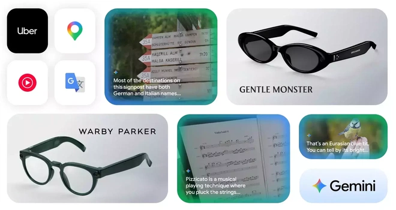

제품 소개
IT소식에 따르면, 오늘 열린 Galaxy Unpacked 2026 여름 발표회에서 Samsung의 첫 번째 AI 안경인 Galaxy Glasses가 공개되었습니다. 이 제품은 최근 Google I/O에서 발표된 개념을 계승하며, Samsung이 글로벌 안경 브랜드인 Gentle Monster 및 Warby Parker와 협력하여 제작했습니다.
하드웨어 및 소프트웨어
Samsung Galaxy Glasses는 Snapdragon AR1 Gen1 칩을 탑재했으며, Samsung Galaxy 스마트폰과 독점적으로 페어링됩니다. 또한 Google의 AI 음성 비서인 Gemini를 지원하여 더욱 자연스럽고 즉각적이며 직관적인 상호작용을 제공합니다.
안경에 디스플레이는 없지만 오디오 출력을 통해 AI 기능을 제공하며, 내장된 카메라를 통해 시각 정보를 Gemini로 전송할 수 있습니다. 주요 기능은 다음과 같습니다.
- 실시간 번역
- 실시간 내비게이션
- 메시지 요약 생성
- 사용자가 보는 내용을 포착하여 Samsung 노트로 직접 전송
- 통화 중 카메라 실시간 화면을 핸즈프리로 공유
주요 기능
현 시점 집중: 이 기기는 긴 메시지 요약, 핵심 정보 읽어주기, 실시간 번역 등을 지원하며, 연결된 기기를 통해 간단한 음성이나 제스처로 조작할 수 있습니다.
장면 정보 캡처: 명령을 받으면 화이트보드나 회의 내용과 같은 시각적 정보를 포착하여 메모장에 정리함으로써 추후 검토 및 공유를 용이하게 합니다.
컨텍스트 인식 지원: 사용자의 현재 상황을 이해하고 서로 다른 작업 간의 관련 정보를 연결하여 가치 있는 후속 상호작용을 지원하며, 중복 작업을 최소화합니다.
실시간 시각 공유: 통화 중에 보고 있는 내용을 공유하거나 자신의 시점을 기록하여 양손이 자유로운 상태에서 즉각적인 소통을 가능하게 합니다.
배터리 및 디자인
Samsung Galaxy Glasses는 터치 프레임을 통한 조작과 제스처 제어를 지원하며, 제스처 제어 기능은 Galaxy Watch 9와 함께 사용할 때 가능합니다. 또한 Android XR 시스템을 탑재했습니다.
배터리 및 충전:
- 단일 충전 시 최대 9시간 지속
- 충전 케이스 포함 시 최대 7회 추가 완충 지원
디자인 옵션: Samsung은 두 가지 프레임 스타일을 선보였습니다. Gentle Monster 모델은 검은색의 슬림한 디자인으로 세련미를 강조하며, Warby Parker 모델은 갈색 톤과 정교한 라인으로 일상적인 착용에 적합합니다.
총평
Samsung이 Gentle Monster 및 Warby Parker와 협력하여 첫 AI 안경인 Galaxy Glasses를 출시했습니다. Snapdragon AR1 Gen1 칩과 Gemini 지원을 통해 실시간 번역, 내비게이션 등 다양한 기능을 제공하며, 전용 충전 케이스와 두 가지 스타일의 프레임을 갖췄습니다.
产品发布与合作
Samsung 在 Galaxy Unpacked 2026 夏季发布会上推出了首款 AI 眼镜 Samsung Galaxy Glasses。该产品由 Samsung 与全球眼镜品牌 Gentle Monster 和 Warby Parker 联合打造，旨在提供更自然、即时且直观的 AI 交互体验。
核心硬件与技术规格
- 芯片：搭载 Snapdragon AR1 Gen1 芯片
- 系统：运行 AndroidXR 系统
- 兼容性：独家与 Samsung Galaxy 智能手机匹配，支持 Google AI 语音助手 Gemini
- 续航能力：单次充电最长可达 9 小时，配套的充电盒可提供最多 7 次满电充电
核心功能特性
该眼镜不配备显示屏，而是通过音频输出提供 AI 辅助。内置摄像头可捕捉视觉信息并传输至 Gemini，支持以下核心功能：
- 实时翻译、实时导航及消息摘要生成
- 内容捕获：可将白板或会议讨论等视觉内容自动整理到 Samsung Notes 中
- 上下文感知：理解用户当前环境以提供更具价值的后续交互
- 实时视觉共享：在通话过程中分享摄像头捕捉的实时画面，实现免提操作
交互与外观设计
用户可以通过触控镜框进行操作，并可搭配 Galaxy Watch 9 使用手势控制。产品提供两种不同风格的镜框选择：
- Gentle Monster 款型：采用黑色纤细镜框，主打精致和时尚设计
- Warby Parker 款型：呈现浓郁棕色调，线条精美且适合日常佩戴
总结
Samsung 推出的 Samsung Galaxy Glasses 是首款搭载 Snapdragon AR1 Gen1 芯片并深度整合 Google Gemini 的 AI 眼镜。该产品通过音频交互和视觉捕捉提供实时翻译、导航及内容记录等功能，并与 Gentle Monster 和 Warby Parker 合作提供两种不同风格的时尚外观。
製品紹介
ITニュースによると、本日開催された「Galaxy Unpacked 2026 Summer」にて、Samsung初のAIグラスである「Galaxy Glasses」が公開されました。この製品は最近のGoogle I/Oで発表されたコンセプトを継承しており、SamsungはグローバルなアイウェアブランドであるGentle MonsterおよびWarby Parkerと提携して製造しました。
ハードウェアおよびソフトウェア
Samsung Galaxy GlassesはSnapdragon AR1 Gen1チップを搭載しており、Samsung Galaxyスマートフォンと独占的にペアリングされます。また、GoogleのAIアシスタント「Gemini」をサポートすることで、より自然で即時的、かつ直感的なインタラクションを提供します。
眼鏡自体にディスプレイは搭載されていませんが、オーディオ出力を通じてAI機能を提供し、内蔵カメラを通じて視覚情報をGeminiに送信することが可能です。主な機能は以下の通りです。
- リアルタイム翻訳
- リアルタイムナビゲーション
- メッセージの要約生成
- ユーザーが見ている内容をキャプチャし、Samsung Notesへ直接転送
- 通話中にカメラのリアルタイム映像をハンズフリーで共有
主な機能
現在の焦点：このデバイスは、長いメッセージの要約、重要情報の読み上げ、リアルタイム翻訳などをサポートしており、接続されたデバイスを通じて簡単な音声やジェスチャで操作することが可能です。
シーン情報のキャプチャ：コマンドを受け取ると、ホワイトボードや会議の内容などの視覚情報をキャプチャしてメモ帳に整理し、後からの確認や共有を容易にします。
コンテキスト認識のサポート：ユーザーの現在の状況を理解し、異なるタスク間の関連情報を連携させることで価値のあるフォローアップなインタラクションをサポートし、重複する作業を最小限に抑えます。
リアルタイム視覚共有：通話中に見ている内容を共有したり、自分の視点を記録したりすることで、両手が自由な状態での即時的なコミュニケーションを可能にします。
バッテリーとデザイン
Samsung Galaxy Glassesはタッチフレームによる操作とジェスチャー制御をサポートしており、ジェスチャー制御機能はGalaxy Watch 9と併用する際に利用可能です。また、Android XRシステムを搭載しています。
バッテリーおよび充電：
- 単一の充電で最大9時間持続
- 充電ケースを含めると最大7回の追加充電に対応
デザインオプション：Samsungは2種類のフレームスタイルを発表しました。Gentle Monsterモデルは黒の細身のデザインで洗練された印象を与え、Warby Parkerモデルはブラウン系と精巧なラインで日常的な着用に適したデザインとなっています。
まとめ
SamsungはGentle MonsterおよびWarby Parkerと提携し、初のAIグラス「Galaxy Glasses」を発表しました。Snapdragon AR1 Gen1チップとGeminiのサポートにより、リアルタイム翻訳やナビゲーションなどの多彩な機能を備え、専用ケースと2種類のデザインで提供されます。
Product Introduction
According to IT news, Samsung's first AI glasses, Galaxy Glasses, were unveiled at the Galaxy Unpacked 2026 Summer event today. This product follows concepts introduced during Google I/O and was produced in collaboration with global eyewear brands Gentle Monster and Warby Parker.
Hardware and Software
The Samsung Galaxy Glasses are equipped with the Snapdragon AR1 Gen1 chip and pair exclusively with Samsung Galaxy smartphones. It also supports Google's AI assistant, Gemini, to provide more natural, immediate, and intuitive interactions.
While the glasses do not feature a display, they provide AI functionality through audio output, and an integrated camera can transmit visual information to Gemini. Key features include:
- Real-time translation
- Real-time navigation
- Message summary generation
- Capturing what the user sees and sending it directly to Samsung Notes
- Hands-free sharing of real-time camera views during calls
Key Features
Focus on Current Moment: The device supports long message summaries, reading out key information, and real-time translation, which can be controlled via simple voice commands or gestures through connected devices.
Scene Information Capture: Upon receiving a command, the glasses capture visual information such as whiteboards or meeting content and organize it in notes to facilitate later review and sharing.
Context-Aware Support: The device understands the user's current situation and links related information across different tasks to support valuable follow-up interactions while minimizing redundant work.
Real-time Visual Sharing: Users can share what they are seeing or record their point of view during calls, enabling immediate communication in a hands-free state.
Battery and Design
The Samsung Galaxy Glasses support interaction through a touch frame and gesture control; the gesture feature is available when used in conjunction with the Galaxy Watch 9. The device also runs on the Android XR system.
Battery and Charging:
- Up to 9 hours of use on a single charge
- Supports up to 7 additional charges with the included charging case
Design Options: Samsung introduced two frame styles. The Gentle Monster model features a sleek black design for a sophisticated look, while the Warby Parker model features brown tones and refined lines suitable for everyday wear.
Summary
Samsung has launched its first AI glasses, Galaxy Glasses, in collaboration with Gentle Monster and Warby Parker. Powered by the Snapdragon AR1 Gen1 chip and Google's Gemini AI, the device offers advanced capabilities such as real-time translation and hands-free visual sharing. The product combines high-performance hardware with stylish design options to provide a seamless augmented reality experience.

